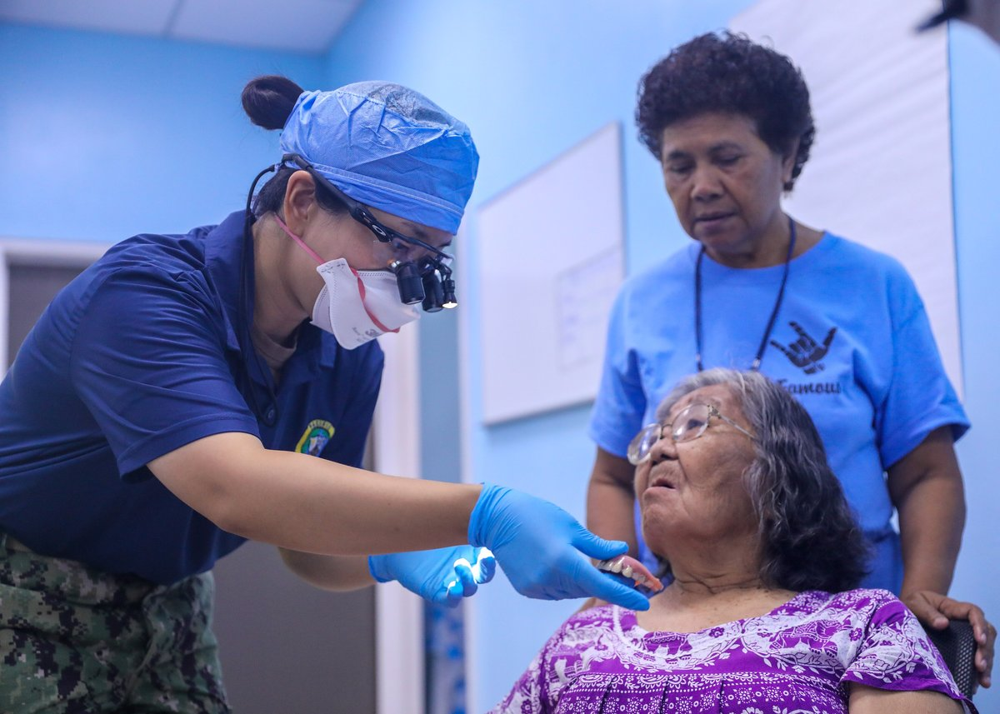
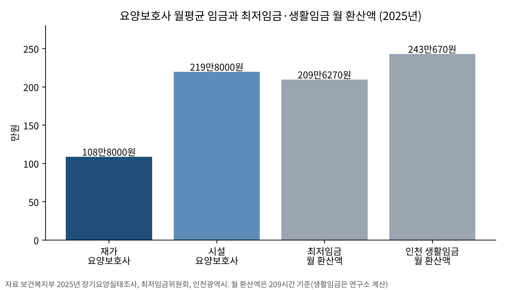
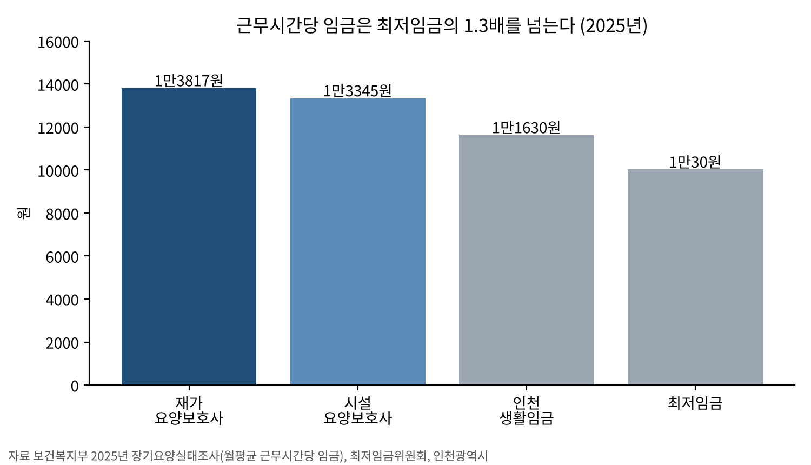
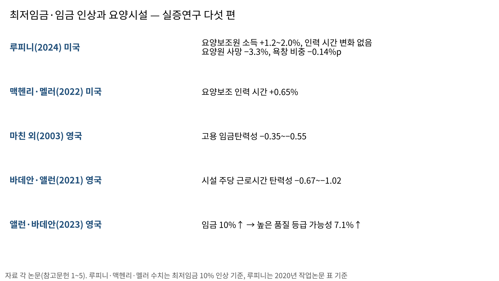
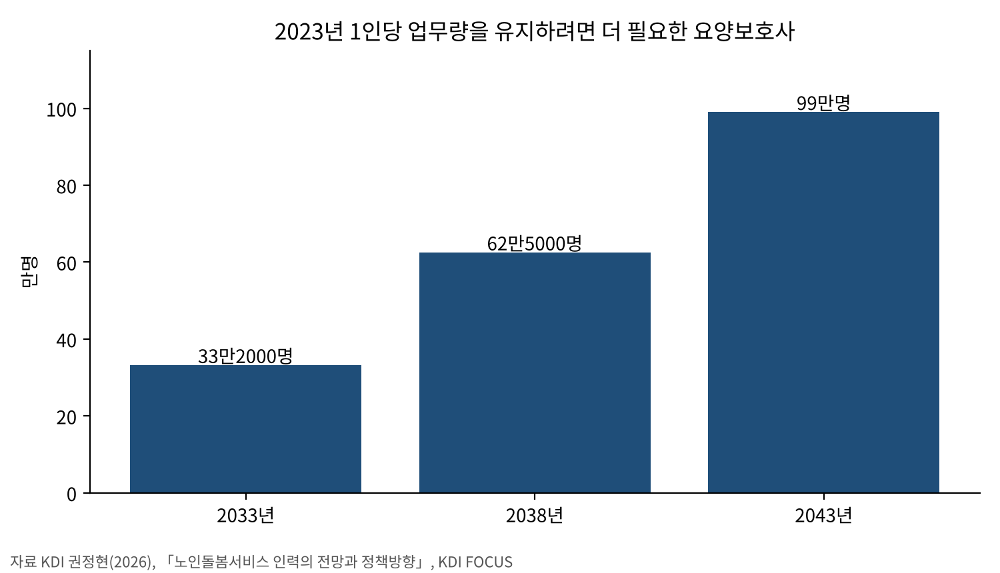

[돌봄] 시급은 최저임금 넘는데 월급 108만8000원…요양보호사 임금이 돌봄의 질 가른다
미·영 실증연구 다섯 편, 임금 오르자 품질 지표 개선·고용은 엇갈려
영국 요양원은 가격 묶이자 시간 줄여…한국 수가는 정부가 정한다
AI경제저널=김갑봉 기자 | 요양보호사 임금을 올리면 돌봄이 나아질까. 아니면 비용만 늘고 일자리가 줄어들까.
미국과 영국 요양시설을 다룬 계량 실증연구 다섯 편을 맞대 보면 답은 한쪽으로 모이지 않는다. 임금이 오른 곳에서 돌봄 품질 지표는 좋아졌다. 고용과 근로시간은 늘어난 비용을 누가 치르느냐에 따라 갈렸다.
시급 1만3817원, 월급 108만8000원

보건복지부가 지난 8월 발표한 2025년 장기요양실태조사를 보면 재가 요양보호사의 월평균 임금은 108만8000원이다. 한 달 근무시간은 78.7시간이다.
근무시간당 임금은 1만3817원으로 2025년 최저임금 1만30원의 1.38배다. 시급만 보면 최저임금을 넉넉히 넘는다. 그러나 월급은 최저임금 월 환산액 209만6270원의 51.9%에 그친다(연구소 계산).
시설 요양보호사는 사정이 다르다. 월 164.7시간을 일해 219만8000원을 받는다. 근무시간당 임금은 1만3345원으로 재가보다 오히려 낮다. 같은 일을 해도 일감의 길이가 월급을 갈랐다.

재가급여 종사자의 74.7%는 계약직이다. 시설급여 종사자는 71.1%가 정규직이다. 장기요양요원의 63.4%가 60세 이상이고, 재가 종사자는 20.2%가 70세 이상이다.
처우개선 과제를 묻자 62.2%가 임금 수준 향상을 꼽았다. 법정수당·휴게·근로시간 보장(17.1%)보다 세 배 넘게 많다.

미국 요양원 7700곳, 주 경계를 사이에 둔 비교
크리스타 루피니(Krista Ruffini) 미국 조지타운대 연구자는 주 경계를 맞댄 카운티 쌍을 비교했다. 같은 생활권인데 주마다 최저임금이 다른 차이를 이중차분법으로 잡았다. 논문은 2024년 11월 『리뷰 오브 이코노믹스 앤드 스태티스틱스』에 실렸다.
분석 대상은 1990~2017년 카운티 1136곳의 요양원 약 7700곳이다. 이 카운티들은 그 사이 최저임금이 평균 일곱 번 바뀌었다. 아래 수치는 2020년 작업논문의 표 기준이다.
최저임금이 10% 오르자 요양보조원 소득은 1.2~2.0% 올랐다. 입소자 한 사람당 하루 요양보조 인력 시간은 통계적으로 변하지 않았다. 전일제 환산 요양보조원 수는 0.63% 늘었다.
품질 지표는 좋아졌다. 점검 위반 건수는 약 1% 줄었고, 중등도 이상 욕창이 있는 입소자 비중은 0.14%포인트(약 1.7%) 낮아졌다. 요양원 안 사망률은 3.3% 내려갔다.
반대 방향의 결과도 있다. 중대 위반을 한 건 이상 받을 확률은 0.7%포인트 높아졌다. 전체 카운티 표본에 주별 추세를 넣은 모형에서는 요양원 사망 추정치가 약간 양(+)으로 돌아섰다.
비용은 가격으로 넘어갔다. 입소자 한 사람당 수입이 0.7% 늘었고, 그 약 75%가 개인 부담 입소자의 가격 인상에서 나왔다. 메디케이드 입소자 비중은 0.26%포인트 줄었다. 순이익 변화는 통계적으로 의미가 없었다.
가격이 묶인 영국 요양원은 시간을 줄였다
영국 결과는 다르다. 스티븐 마친(Stephen Machin) 등 영국 연구진은 1999년 4월 시급 3.60파운드로 도입된 국가 최저임금이 요양원에 미친 영향을 분석했다. 도입 전 요양원 노동자의 32.3%가 그 아래를 받았다.
저임금 노동자가 많던 요양원일수록 고용과 근로시간이 줄었다. 고용의 임금탄력성은 약 −0.35~−0.55였다. 요양원 폐업은 늘지 않았고 가격도 크게 오르지 않았다.
연구진은 그 까닭을 가격 구조에서 찾았다. 정부가 비용을 대는 입소자의 지불액에는 상한이 있었고, 최저임금 도입 때 이 상한이 오르지 않았다. 늘어난 인건비를 가격으로 넘기기 어려운 구조였다.
플로린 바데안(Florin Vadean)·스티븐 앨런(Stephen Allan) 켄트대 연구진은 2015~2016년 최저임금 인상과 국민생활임금 도입을 분석했다. 잉글랜드 요양시설의 주당 근로시간이 줄었고, 탄력성은 −0.67~−1.02였다. 근로시간을 보장하지 않는 0시간 계약도 단기적으로 늘었다.
같은 연구진은 2023년 다른 논문에서 임금이 10% 오르면 요양시설이 품질 평가에서 높은 등급을 받을 가능성이 7.1% 커진다고 추정했다. 미국에서도 2017~2019년 요양시설 1만4143곳을 분석한 연구는 최저임금 10% 인상에 요양보조 인력 시간이 0.65% 늘었다고 보고했다.

자격증은 있는데 일할 사람이 없다
국회예산정책처는 요양보호사 자격증 취득자 가운데 실제 일하는 사람이 22.8%(2024년)라고 밝혔다. 자격은 있어도 일터로 오지 않는다는 뜻이다.
KDI 권정현 연구진은 2023년 일하는 요양보호사를 71만명으로 봤다. 2034년 80만6000명에서 정점을 찍은 뒤 줄어든다고 전망했다. 60세 이상 비중은 63.1%에서 2043년 72.6%로 오른다.
수요는 더 빨리 는다. 2023년 1인당 업무량을 유지하려면 2033년 33만2000명, 2043년 99만명이 더 필요하다는 추산이다. 2025년 실태조사에서 장기요양기관의 67.2%가 인력 채용을 운영상 어려움으로 꼽았다.

수가에는 인건비로 써야 할 비율이 정해져 있다. 이를 지키지 않은 기관은 2024년 20.1%였다. 2020~2024년 해마다 19.0~23.7%였고, 지키지 않아도 따로 제재하는 규정이 없다.
한국 수가는 정부가 정한다
한국 장기요양 수가는 보건복지부가 장기요양위원회 의결을 거쳐 해마다 정한다. 2025년 11월 4일 위원회는 2026년 수가와 보험료율 0.9448%를 의결했다. 돌봄 인력 처우 개선도 이 자리에서 정해졌다.
정부는 2026년부터 장기근속장려금 요건을 근속 3년에서 1년으로 낮췄다. 1년 이상 근속자에게 월 5만원을 새로 주고 최대 월 18만원까지 올린다. 받는 종사자 비중은 14.9%에서 37.6%로 오를 전망이다.
인천시 2025년 생활임금은 시급 1만1630원이다. 재가 요양보호사의 근무시간당 임금 1만3817원이 이보다 높다. 월로 따지면 사정이 뒤집힌다. 재가 요양보호사 월급은 생활임금 월 환산액 243만670원의 44.8%다(연구소 계산, 209시간 기준).
인천 생활임금의 적용 대상은 시 소속 노동자, 시 산하기관 노동자, 시 위탁 사무를 직접 맡는 노동자다. 2025년 적용 인원은 약 1100명이다. 2026년 생활임금은 시급 1만2010원으로 올랐다.
다섯 연구가 가른 지점은 늘어난 인건비를 누가 치르느냐였다. 개인 부담 가격을 올린 미국 요양원은 인력 시간을 지켰다. 지불액이 묶인 영국 요양원은 시간을 줄였다. 한국에서 그 몫은 수가가 정한다.
참고문헌
- Ruffini, K. (2024). "Worker Earnings, Service Quality, and Firm Profitability: Evidence from Nursing Homes and Minimum Wage Reforms." The Review of Economics and Statistics, 106(6), 1477–1494. https://doi.org/10.1162/rest_a_01271 (수치는 같은 제목 Washington Center for Equitable Growth Working Paper, 2020년 6월판 표 기준)
- Machin, S., Manning, A., & Rahman, L. (2003). "Where the Minimum Wage Bites Hard: Introduction of Minimum Wages to a Low Wage Sector." Journal of the European Economic Association, 1(1), 154–180. https://doi.org/10.1162/154247603322256792
- Vadean, F., & Allan, S. (2021). "The Effects of Minimum Wage Policy on the Long-Term Care Sector in England." British Journal of Industrial Relations, 59(2), 307–334. https://doi.org/10.1111/bjir.12572
- Allan, S., & Vadean, F. (2023). "The Impact of Wages on Care Home Quality in England." The Gerontologist, 63(9), 1428–1436. https://doi.org/10.1093/geront/gnad032
- McHenry, P., & Mellor, J. M. (2022). "The Impact of Recent State and Local Minimum Wage Increases on Nursing Facility Employment." Journal of Labor Research, 43(3–4), 345–368. https://doi.org/10.1007/s12122-022-09338-x
- "장기요양 재가 어르신 10명 중 7명, '아파도 살던 집에서 살겠다' 「2025년 장기요양실태조사」 결과 발표", 보건복지부, 2026.8.6, https://www.mohw.go.kr/board.es?act=view&bid=0027&list_no=1491533&mid=a10503010100
- 권정현 (2026). 「노인돌봄서비스 인력의 전망과 정책방향」. KDI FOCUS, 한국개발연구원, https://www.kdi.re.kr/research/focusView?pub_no=19161
- "국회예산정책처, 「노인장기요양보험 정책·사업 평가」 발간", 국회예산정책처, 2025.11.20, https://www.nabo.go.kr/ko/notice/releasesView.do?idx=8991
- "내년 장기요양보험료 517원 인상…'중증 수급자·돌봄 인력' 지원 확대", 보건복지부(대한민국 정책브리핑), 2025.11.4, https://www.korea.kr/news/policyNewsView.do?newsId=148953948
- "연도별 최저임금 결정현황", 최저임금위원회, https://www.minimumwage.go.kr/minWage/policy/decisionMain.do
- "인천광역시, 2025년 생활임금 시급 11,630원으로 결정", 인천광역시, 2024.8.30, https://www.incheon.go.kr/IC010205/view?repSeq=DOM_0000000010611865
- "2026년 인천광역시 생활임금 고시(인천광역시 고시 제2025-264호)", 인천광역시, 2025.9.3, https://announce.incheon.go.kr/citynet/jsp/sap/SAPGosiBizProcess.do?command=searchDetail&flag=gosiGL&svp=Y&sido=ic&sno=62276&gosiGbn=N
사진·도표 출처
- [사진1] 미 해군 Gavin Arnoldhendershot 이병, 「Pacific Partnership 2024-1- Dental at the Senior Care Center (8188707).jpg」, 2024년 1월 4일, 위키미디어 공용, 퍼블릭 도메인(미국 연방정부 저작물). https://commons.wikimedia.org/wiki/File:Pacific_Partnership_2024-1-_Dental_at_the_Senior_Care_Center_(8188707).jpg
- [사진2] 미 주방위군 Michael Baltz 병장(제107 이동공보분견대), 「Florida National Guard (49846855136).jpg」, 2020년 5월 1일, 위키미디어 공용, 퍼블릭 도메인(미국 연방정부 저작물). https://commons.wikimedia.org/wiki/File:Florida_National_Guard_(49846855136).jpg
- [사진3] 미 어류야생동물관리국 Rob Holm, 「Prairieview Nursing Home Derby 2011 (51299019726).jpg」, 2011년, 위키미디어 공용, 퍼블릭 도메인(미국 연방정부 저작물). https://commons.wikimedia.org/wiki/File:Prairieview_Nursing_Home_Derby_2011_(51299019726).jpg
- [사진4] 미 해병대 Kelsey Dornfeld 상병, 「Marines Team up With ROK Marines at Local Nursing Home 160318-M-PY134-270.jpg」, 2016년 3월 18일, 위키미디어 공용, 퍼블릭 도메인(미국 연방정부 저작물). https://commons.wikimedia.org/wiki/File:Marines_Team_up_With_ROK_Marines_at_Local_Nursing_Home_160318-M-PY134-270.jpg
- [사진5] 미 육군 제4보병사단 제1여단 Jonathan Sauls 중위, 「U S Soldiers Serve Korean Seniors at Pocheon Community Event (9243239).jpg」, 2025년 8월 7일, 위키미디어 공용, 퍼블릭 도메인(미국 연방정부 저작물). https://commons.wikimedia.org/wiki/File:U_S_Soldiers_Serve_Korean_Seniors_at_Pocheon_Community_Event_(9243239).jpg
- [사진6] 미 육군 April Campbell 하사, 「All-American Chorus helps Elizabethtown residents celebrate National Nursing Home Week 130515-A-EM852-005.jpg」, 2013년 5월 15일, 위키미디어 공용, 퍼블릭 도메인(미국 연방정부 저작물). https://commons.wikimedia.org/wiki/File:All-American_Chorus_helps_Elizabethtown_residents_celebrate_National_Nursing_Home_Week_130515-A-EM852-005.jpg
- [도표1~4] 경세제민 AI·경제 연구소 작성. 자료 보건복지부 2025년 장기요양실태조사, 최저임금위원회, 인천광역시, KDI(권정현, 2026), 각 논문(참고문헌 1~5)
관련기사
- [한국경제 불편한 진실⑨] 돌봄 — 멈추면 나라가 멈추는데, 값은 최저임금 언저리
- [경세제민] 최저임금③ 독일 벌금 7억원, 한국은 2000만원
- [자영업자②] 최저임금 1만700원 시대, 자영업자와 노동자는 왜 맞서는가
- [일자리·임금] 가계소득 늘어난 몫의 69%는 나랏돈이었다
저작권자 © AI경제저널 무단전재 및 재배포, AI학습 및 활용 금지